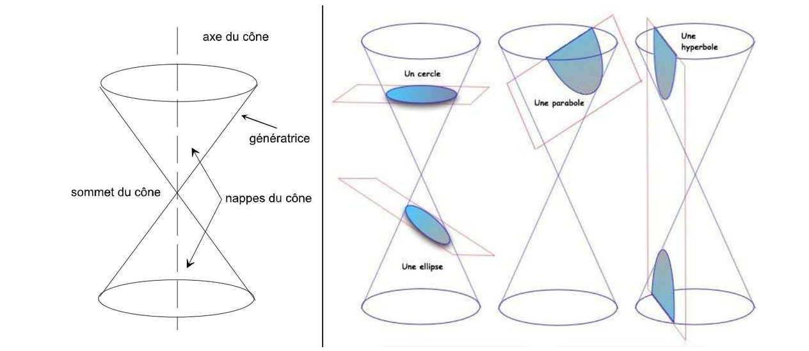
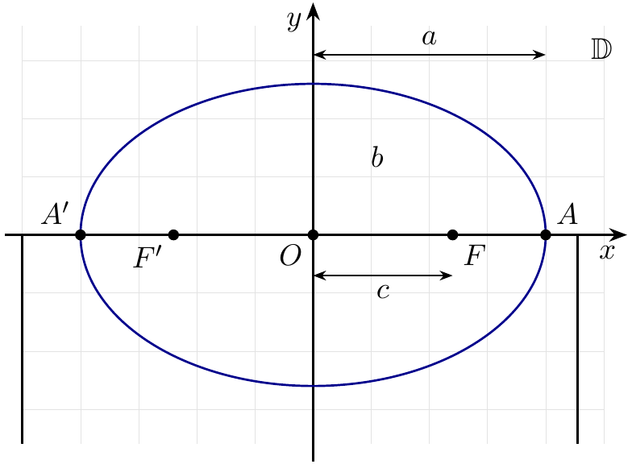
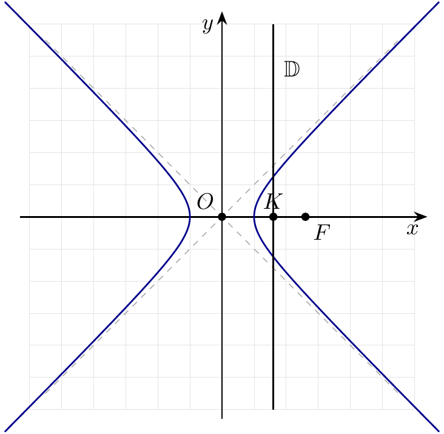

Chapitre 1 : Les coniques \large Prépa à la prépa
Prépa à la prépa · Chapitre 1 — Les coniques · cours de Frederik de Peyrelongue
I. I Introduction
Une approche intéressante des coniques est de les considérer comme l'intersection d'un plan avec un cône de révolution. Cette méthode permet de comprendre de manière géométrique l'origine des différentes courbes coniques (cercle, ellipse, parabole et hyperbole) et de mieux saisir leurs propriétés.
1.1 Le cône de révolution
Un cône de révolution est un cône formé par la rotation d'un triangle rectangle autour de l'un de ses côtés. Ce cône a un axe de symétrie, et tous les générateurs (les segments de droite reliant un point sur la base et le sommet du cône) sont inclinés sous le même angle par rapport à l'axe. Ce cône a une forme « pyramidale » et ses sections par un plan peuvent produire différents types de courbes appelées coniques.
1.2 Les coniques comme intersections du cône et du plan
La manière dont une courbe conique est formée dépend de l'angle avec lequel le plan coupe le cône. Voici les différentes possibilités selon l'orientation du plan par rapport au cône.
a) Le cercle (plan perpendiculaire à l'axe du cône)
- Description : si le plan coupe le cône perpendiculairement à l'axe du cône (l'axe de révolution), l'intersection produite est un cercle.
- Géométriquement : le plan coupe le cône à égale distance de l'axe dans toutes les directions, produisant une courbe dont tous les points sont à une distance constante du centre, formant ainsi un cercle.
b) L'ellipse (plan incliné, mais pas parallèle à l'axe du cône)
- Description : si le plan coupe le cône sous un angle oblique, mais sans être parallèle à l'axe du cône, l'intersection sera une ellipse.
- Géométriquement : le plan est incliné par rapport à l'axe, donc les points de l'intersection suivent une courbe fermée mais étendue selon l'orientation du plan, formant une ellipse.
c) La parabole (plan parallèle à un générateur du cône)
- Description : si le plan coupe le cône parallèlement à l'un des générateurs (lignes formant les côtés du cône), l'intersection produite est une parabole.
- Géométriquement : le plan touche le cône suivant une ligne parallèle à l'un des générateurs, ce qui forme une courbe ayant une symétrie axiale, typique de la parabole.
d) L'hyperbole (plan coupant les deux nappes du cône)
- Description : si le plan coupe le cône de manière à intersecter les deux nappes (les deux parties du cône au-dessus et au-dessous de l'axe), l'intersection produira une hyperbole.
- Géométriquement : le plan coupe le cône en traversant les deux parties opposées du cône, ce qui crée deux branches opposées, formant une hyperbole.
1.3 Les quatre cas en images

À gauche : les éléments du cône de révolution (axe, sommet, génératrices, nappes). À droite : les quatre coniques obtenues selon l'inclinaison du plan de coupe : le cercle (plan perpendiculaire à l'axe), l'ellipse (plan incliné), la parabole (plan parallèle à une génératrice) et l'hyperbole (plan coupant les deux nappes).
II. II Définition par foyer, directrice et excentricité
La droite $\Delta$ passant par $F$ et perpendiculaire à $\D$ est appelée axe focal de $\C$.
On note
On notera $K$ l'intersection de $\D$ et $\Delta$.
Si $M$ est un point de $\C$, notons $M'$ son symétrique par rapport à l'axe focal $\Delta$. La conservation des distances par une symétrie orthogonale nous donne $\dfrac{M'F}{M'H'}=e$, où $H'$ est le projeté orthogonal de $M'$ sur $\D$, mais aussi le symétrique de $H$. $M'$ appartient donc à $\C$.
L'axe focal est donc un axe de symétrie de nos coniques $\C$.
Cette remarque nous pousse à choisir $\Delta$ comme premier axe du repère orthonormé que nous allons choisir pour établir les équations cartésiennes de nos coniques.
Pour l'origine du repère, on choisit une intersection de $\C$ et de l'axe focal :
- Si $e=1$ la première équation a pour solution le milieu de $[FK]$ et la seconde n'a pas de solution.
Si $e\neq1$, $\C\cap\Delta=\{A\,;A'\}$ où $A$ est le barycentre de $F(1)$, $K(e)$ et $A'$ le barycentre de $F(1)$, $K(-e)$. En notant $O$ le milieu de $[AA']$, on a (propriété des barycentres)
\[ \begin{cases} \overline{OF}+e\,\overline{OK}=(1+e)\overline{OA}\\ \overline{OF}-e\,\overline{OK}=(1-e)\overline{OA'}=(e-1)\overline{OA} \end{cases} \Longrightarrow \begin{cases} \overline{OF}=e\,\overline{OA}\\ e\,\overline{OK}=\overline{OA} \end{cases} \]
En orientant l'axe $\Delta$ de $O$ vers $A$, $\overline{OA}=OA=a$, $\overline{OF}=OF=c$ et $\overline{OK}=OK=d$.
On obtient les formules à retenir suivantes :
Voyons selon les valeurs de « $e$ » les différents cas.
2.1 La parabole, cas où $e=1$
La parabole est le cas particulier où l'excentricité $e$ est égale à $1$.
Une parabole est le lieu des points $M$ tels que le rapport des distances entre $M$ et un foyer $F$ et $M$ et une directrice $D$ est constant et égal à $1$, c'est-à-dire que
Pour chaque point $M$ de la parabole, la distance à $F$ est égale à la distance à la directrice $\D$.
Méthode pour tracer la parabole. On prend un point $H$ sur la directrice $\D$ de la conique ; $M$ est alors l'intersection de la médiatrice de $[FH]$ et de la droite perpendiculaire à $\D$ passant par $H$. Si $H$ est en $K$, le point $M$ est alors en $S$, milieu de $[KF]$. En faisant varier $H$ sur $\D$, on obtient une parabole de sommet $S$.
Plaçons-nous dans le repère orthogonal $R=\left(O\,;\vec{\imath}\,;\vec{\jmath}\right)$ d'origine le milieu $O$ du segment $[FK]$ et de premier axe $\Delta$ orienté de $K$ vers $F$. $F$ et $K$ ont les coordonnées suivantes : $F(c\,;0)$ et $K(-c\,;0)$.
Soit $M(x\,;y)\in\C$ :
avec $p=2c$, c'est-à-dire la distance du foyer à la directrice.
On appelle parabole de paramètre $p$ réel strictement positif toute courbe dont l'équation cartésienne, dans un repère orthogonal, est de la forme
La courbe de la fonction carré est une parabole (on a permuté les axes).
À partir de l'équation cartésienne d'une parabole, retrouver le foyer et la directrice. Exemple : $y=\dfrac{1}{4}x^{2}$.
1\iere{} méthode. Ici $x$ et $y$ jouent des rôles inversés, donc la parabole est verticale, d'où $x^{2}=4y$. On a alors $p=2=d(F\,;\D)$, donc $F(0\,;1)$ et $\D\,:\,y=-1$.
2\ieme{} méthode. Soit $y=d$ la directrice et $F(0\,;c)$ le foyer, avec $MH=MF$ (car c'est une parabole) :
2.2 Cas où $e\neq1$ : équation cartésienne
Plaçons-nous dans le repère orthogonal $R=\left(O\,;\vec{\imath}\,;\vec{\jmath}\right)$ où $\vec{\imath}=\dfrac{\overline{OA}}{\left|\overline{OA}\right|}$ et $O$ le milieu de $[AA']$, où $A$ est le barycentre de $F(1)$, $K(e)$ et $A'$ le barycentre de $F(1)$, $K(-e)$.
On a $OA=a$, $OF=c$ et $OK=d$. On a les rapports suivants :
Soit $M(x\,;y)\in\C$ :
Poursuivons le calcul :
On a évidemment $a^{2}\neq c^{2}$ car $e=\dfrac{c}{a}\neq1$.
Dans le cas où $e<1$, alors $a^{2}-c^{2}=(a+c)(a-c)>0$ car $a>c$ ; on pose $b^{2}=a^{2}-c^{2}$. On vient d'obtenir une équation cartésienne réduite de la conique $\C$ :
On appelle ellipse $E$ toute courbe dont une équation cartésienne dans un repère orthogonal est de la forme
où $a$ et $b$ sont des réels non nuls.
- On a donc montré que toute conique de foyer $F$, de directrice $\D$ et d'excentricité $e<1$ est une ellipse.
Réciproquement, si $a\neq b$, on peut supposer $a>b$ (quitte à échanger les rôles de $x$ et $y$). On pose alors $c=\sqrt{a^{2}-b^{2}}$, on définit $F(c\,;0)$ et $\D$ d'équation $x=\dfrac{a^{2}}{c}$.
En partant de $\dfrac{y^{2}}{a^{2}-c^{2}}+\dfrac{x^{2}}{a^{2}}=1$, on remonte les équivalences et on obtient que $M\in E\iff MF=eMH$.
Les axes $(Ox)$ et $(Oy)$ sont des axes de symétrie. On peut tracer $E$ en étudiant les fonctions
\[ f(x)=\frac{b}{a}\sqrt{a^{2}-x^{2}} \quad\text{et}\quad g(x)=-\frac{b}{a}\sqrt{a^{2}-x^{2}} . \]

Déterminer les éléments caractéristiques, le foyer $F$, la directrice $\D$ et l'excentricité de la conique à partir de l'équation cartésienne.
Soit $E$ d'équation $\dfrac{x^{2}}{16}+\dfrac{y^{2}}{9}=1$.
On a $a^{2}=16$ donc $a=4$ ; $b^{2}=9$ donc $b=3$ ; on pose $c=\sqrt{a^{2}-b^{2}}=\sqrt{7}$.
Le foyer est $F(c\,;0)=\left(\sqrt{7}\,;0\right)$, la directrice est $\D\,:\,x=\dfrac{a^{2}}{c}=\dfrac{16}{\sqrt{7}}=\dfrac{16\sqrt{7}}{7}$ et $e=\dfrac{c}{a}=\dfrac{\sqrt{7}}{4}$.
Si $a<b$ on permute les rôles, donc les axes.
Dans le cas où $e>1$, alors $a^{2}-c^{2}=(a+c)(a-c)<0$ car $a<c$ ; on pose $b^{2}=c^{2}-a^{2}$. On vient d'obtenir une équation cartésienne réduite de la conique $\C$ :
On appelle hyperbole $H$ toute courbe dont une équation cartésienne dans un repère orthogonal est de la forme
où $a$ et $b$ sont des réels non nuls.
On a donc montré que toute conique de foyer $F$, de directrice $\D$ et d'excentricité $e>1$ est une hyperbole.
Réciproquement, toute hyperbole $H$ d'équation $\dfrac{x^{2}}{a^{2}}-\dfrac{y^{2}}{b^{2}}=1$ dans un repère orthonormal est une conique définie par un foyer $F$, une directrice $\D$ et une excentricité $e>1$.
Pour le prouver, on pose $c=\sqrt{a^{2}+b^{2}}$, $e=\dfrac{c}{a}$, on définit la droite $\D\,:\,x=\dfrac{a^{2}}{c}$ et le point $F(c\,;0)$. On peut alors remonter l'équivalence de la démonstration :
L'hyperbole $H$ est donc la conique de foyer $F$ et de directrice $\D$.

Déterminer les éléments caractéristiques, le foyer $F$, la directrice $\D$ et l'excentricité de la conique à partir de l'équation cartésienne.
2.3 Le cercle
Le cercle peut aussi être vu comme un cas particulier de l'ellipse où les deux foyers sont confondus en un seul point, et l'excentricité $e$ est égale à $0$.
Un cercle est le lieu des points $M$ tels que la distance entre $M$ et un centre $O$ est constante. Si l'on utilise l'idée du rapport des distances, on peut dire que pour un cercle, l'excentricité est $e=0$, et tous les points du cercle sont équidistants du centre.
III. III Les coniques : définition bifocale
3.1 Ellipse
On cherche le lieu $\mathcal{E}$ des points $M$ qui vérifient
où $a$ est un réel strictement positif et où $F$ et $F'$ sont deux points du plan tels que $FF'=2c>0$.
- Si $\mathcal{E}$ est non vide, il existe alors $M$ appartenant à $\mathcal{E}$ et l'inégalité triangulaire nous donne $FF'\leqslant MF+MF'$, donc $c\leqslant a$.
- La contraposée nous donne : $c>a$ implique que $\mathcal{E}$ est vide.
Nous ne devons donc étudier que le cas $c\leqslant a$.
Dans le cas où $c=a$ : $MF+MF'=FF'\iff M\in[FF']$, donc $\mathcal{E}=[FF']$.
3.1 Ellipse (suite) : cas $c<a$
On se place dans le repère $R=\left(O\,;\vec{\imath}\,;\vec{\jmath}\right)$ de la figure ci-dessous, avec $O$ milieu de $[FF']$, donc $F(c\,;0)$ et $F'(-c\,;0)$.
Pour $M(x\,;y)\in\mathcal{E}$ :
Comme $c<a$, $\mathcal{E}$ est l'équation réduite d'une ellipse de centre $O$, de grand axe $[FF']$ et de foyers $F$ et $F'$.
Pour montrer la réciproque, il faut montrer que l'implication « au milieu du calcul » est en fait une équivalence : c'est-à-dire que
Si $M\in\mathcal{E}$, on a forcément $x^{2}\leqslant a^{2}$ et $y^{2}\leqslant a^{2}-c^{2}$, donc l'inégalité recherchée est vérifiée.
3.2 Hyperbole
On cherche le lieu $\mathcal{H}$ des points $M$ qui vérifient
où $a$ est un réel strictement positif et où $F$ et $F'$ sont deux points du plan tels que $FF'=2c>0$.
- Si $\mathcal{H}$ est non vide, il existe alors $M$ appartenant à $\mathcal{H}$ et l'inégalité triangulaire nous donne $\left|MF-MF'\right|\leqslant FF'$, donc $a\leqslant c$.
- La contraposée nous donne : $a>c$ implique que $\mathcal{H}$ est vide.
Nous ne devons donc étudier que le cas $a\leqslant c$.
Dans le cas où $c=a$ :
$\mathcal{H}$ est la droite $(FF')$ à l'exclusion du segment ouvert $[FF']$.
Dans le cas où $a<c$. On se place dans le repère $R=\left(O\,;\vec{\imath}\,;\vec{\jmath}\right)$ de la figure ci-dessous.
On retrouve l'égalité obtenue avec l'ellipse, on obtient donc le même résultat :
L'équation de $\mathcal{H}$ est l'équation d'une hyperbole de foyers $F$ et $F'$.
On doit de nouveau montrer la réciproque et, pour cela, il faut que l'implication utilisée soit en fait une équivalence ; il faut montrer que
Or, sur $\mathcal{H}$, $x^{2}\geqslant a^{2}$ et $y^{2}=\left(a^{2}-c^{2}\right)\left(1-\dfrac{x^{2}}{a^{2}}\right)$, donc
3.3 Hyperbole et ses asymptotes
Soit $\mathcal{H}$ une hyperbole d'équation $\dfrac{x^{2}}{a^{2}}-\dfrac{y^{2}}{b^{2}}=1$ :
Ce système d'équations a pour déterminant $\dfrac{1}{a}\times\dfrac{1}{b}-\left(-\dfrac{1}{b}\right)\times\dfrac{1}{a}=\dfrac{2}{ab}\neq0$, donc le système a une unique solution $(x\,;y)$ en fonction de $(X\,;Y)$. On peut donc effectuer un changement de repère, en prenant $O$ pour origine, $X=0$ pour axe des ordonnées et $Y=0$ pour axe des abscisses.
L'axe $X=0$ correspond à la droite $y=\dfrac{b}{a}x$ et l'axe $Y=0$ correspond à la droite $y=-\dfrac{b}{a}x$.
Dans le repère $\left(O\,;(OX)\,;(OY)\right)$, pas forcément orthonormal, on a obtenu l'équation de la fonction inverse et les axes $X=0$ et $Y=0$ sont les asymptotes de l'hyperbole.
Donc réciproquement, dans le repère initial, $y=\dfrac{b}{a}x$ et $y=-\dfrac{b}{a}x$ sont les deux asymptotes de l'hyperbole.
Pour tracer $\mathcal{H}$, on trace d'abord les deux asymptotes.
L'équation d'une hyperbole dans le système d'axes formé par ses asymptotes est de la forme $xy=k$ où $k\in\R^{*}$.
Toute équation de la forme $xy=k$ où $k\in\R^{*}$ dans un repère quelconque est celle d'une hyperbole dont les asymptotes sont les axes du repère.
3.4 Interprétation géométrique de l'excentricité
| Conique | Excentricité $e$ | Propriétés principales |
| Cercle | $e=0$ | Tous les points à distance égale du centre |
| Ellipse | $0<e<1$ | La somme des distances à deux foyers est constante |
| Parabole | $e=1$ | La distance au foyer est égale à la distance à la directrice |
| Hyperbole | $e>1$ | La différence des distances à deux foyers est constante |
Conclusion. L'excentricité $e$ permet d'expliquer les coniques de manière simple et géométrique. Cette approche montre comment chaque conique (cercle, ellipse, parabole, hyperbole) peut être définie par une relation de distances spécifiques entre un point $M$, les foyers et la directrice. C'est une définition très utile en géométrie analytique, car elle permet de passer facilement des propriétés géométriques à des équations algébriques.
IV. IV Tangentes aux coniques
4.1 Les paraboles
La tangente en $M$ à une parabole $P$ de foyer $F$ et de directrice $\D$ coïncide avec la médiatrice de $[FH]$ où $H$ représente le projeté orthogonal de $M$ sur $\D$.
Preuve. Soit $P$ une parabole d'équation $y^{2}=2px$. Son foyer a donc pour coordonnées $F\left(\dfrac{p}{2}\,;0\right)$ et la directrice a pour équation $x=-\dfrac{p}{2}$.
La parabole peut être vue comme l'union de deux fonctions $f_{1}(x)=\sqrt{2px}$ et $f_{2}(x)=-\sqrt{2px}$.
On prend $M$ sur $\mathcal{C}_{f_{1}}$, donc $M\left(a\,;\sqrt{2pa}\right)\in P$.
Coefficient directeur de $(HF)$. $H$ est le projeté de $M$, donc $H\left(-\dfrac{p}{2}\,;\sqrt{2pa}\right)$ et
Équation de $T_{a}$ de la tangente en $M$ :
On constate que $T_{a}$ et $(HF)$ sont perpendiculaires car $m\times m_{T}=-1$.
Je considère le triangle $HMF$ : on a $MH=MF$ (parabole), le triangle est isocèle, la tangente $T_{a}$ issue de $M$ est donc une hauteur, mais la hauteur dans un triangle isocèle est confondue avec la médiatrice.
4.2 Applications
Optique
- Les paraboles sont utilisées dans la conception de miroirs paraboliques et d'antennes paraboliques.
- La propriété fondamentale d'une parabole est que toute droite parallèle à son axe de symétrie se réfléchit sur la parabole et passe par son foyer.
- La tangente en un point de la parabole est utilisée pour déterminer l'angle de réflexion de la lumière ou des ondes électromagnétiques.
Ingénierie et architecture
- Les paraboles sont souvent utilisées dans la conception de ponts, d'arches et de structures pour répartir les forces de manière optimale.
- La tangente en un point de la parabole permet de déterminer la pente ou l'inclinaison de la structure à cet endroit, ce qui est crucial pour les calculs de stabilité et de résistance.
Physique et mouvement parabolique
- Dans l'étude du mouvement des projectiles, la trajectoire d'un objet lancé dans l'air (en négligeant la résistance de l'air) est une parabole.
- La tangente à la parabole en un point donné représente la direction instantanée du mouvement de l'objet à cet instant.
- Cela permet de déterminer la vitesse et l'angle de lancement optimal pour atteindre une cible.
4.3 Tangentes à une conique à centre
La tangente en un point $M$ d'une ellipse $E$ de foyers $F$ et $F'$ est la bissectrice extérieure issue de $M$ du triangle $MFF'$.
Soit $E$ une ellipse d'équation $\dfrac{x^{2}}{a^{2}}+\dfrac{y^{2}}{b^{2}}=1$ dans un repère orthogonal dont l'axe des abscisses est $(FF')$.
La tangente au point $M\left(x_{0}\,;y_{0}\right)$ a pour équation :
Preuve. On peut représenter cette conique par l'union des deux fonctions suivantes :
L'équation de la tangente au point $M\left(x_{0}\,;y_{0}\right)$ appartenant à $\mathcal{C}_{f_{1}}$ est :
Or $y_{0}=f(x_{0})=\dfrac{b}{a}\sqrt{a^{2}-x_{0}^{2}}$, donc $\sqrt{a^{2}-x_{0}^{2}}=\dfrac{y_{0}a}{b}$, et
D'où
4.4 Applications des tangentes à une ellipse
- Astronomie : les orbites des planètes sont des ellipses, et les tangentes sont utilisées pour étudier les vitesses et les directions des corps célestes.
- Ingénierie : les ellipses sont utilisées dans la conception d'engrenages, de lentilles et de structures mécaniques.
- Architecture : les ellipses et leurs tangentes sont utilisées pour créer des formes esthétiques et fonctionnelles, comme dans les arches ou les dômes.
Une propriété fondamentale des ellipses est que tout rayon émis depuis l'un des foyers de l'ellipse se réfléchit sur l'ellipse et passe par l'autre foyer. Cela signifie que :
- la tangente en un point de l'ellipse est la bissectrice de l'angle formé par les droites reliant ce point aux deux foyers ;
- cette propriété est utilisée dans la conception de miroirs elliptiques (pour concentrer la lumière ou le son) et en acoustique (pour amplifier les sons).